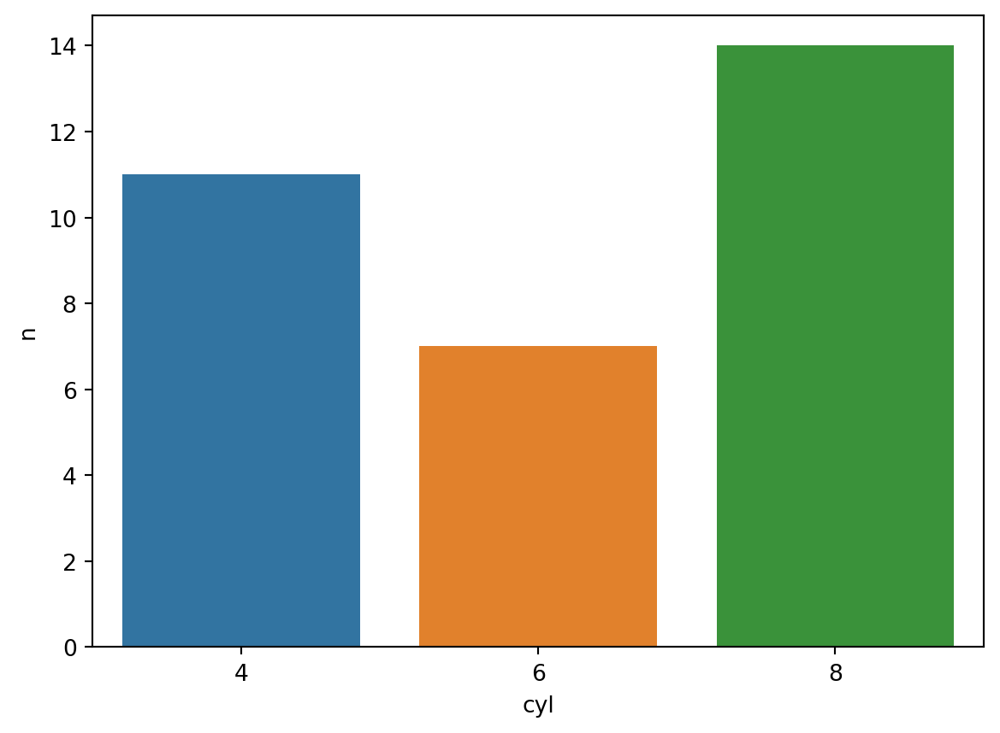

import pandas as pd
from siuba.siu import _, pipe, call
from siuba import group_by, summarize, inner_join, head, filter
from siuba.data import mtcarsFlexible pipes
A commonly used feature of siuba is the >> operator for piping the result of one verb into another. This feature may seem silly compared to method chaining. However, it makes it easy for other packages to contribute new verbs, and lazy pipes can be combined together.
This page will focus on three pieces of piping:
- Piping with the
>>operator. - Using
call()to add external functions to a pipe. - Using
pipe()create pipes without>>.
Basic pipe
Use the >> operator to pass the result of one verb into another.
(mtcars
>> group_by(_.cyl)
>> summarize(res = _.hp.mean())
)| cyl | res | |
|---|---|---|
| 0 | 4 | 82.636364 |
| 1 | 6 | 122.285714 |
| 2 | 8 | 209.214286 |
Note that this is equivalent to the code below, but much more readable.
summarize(
group_by(
mtcars,
_.cyl
),
res = _.hp.mean()
)| cyl | res | |
|---|---|---|
| 0 | 4 | 82.636364 |
| 1 | 6 | 122.285714 |
| 2 | 8 | 209.214286 |
Lazy pipes
Start a pipe with _ to create a lazy pipes. Lazy pipes are a lot like functions—they run once data is passed to them.
filter_cyl = _ >> filter(_.cyl.isin([4, 8]))
mtcars >> filter_cyl >> head()| mpg | cyl | disp | hp | drat | wt | qsec | vs | am | gear | carb | |
|---|---|---|---|---|---|---|---|---|---|---|---|
| 2 | 22.8 | 4 | 108.0 | 93 | 3.85 | 2.32 | 18.61 | 1 | 1 | 4 | 1 |
| 4 | 18.7 | 8 | 360.0 | 175 | 3.15 | 3.44 | 17.02 | 0 | 0 | 3 | 2 |
| 6 | 14.3 | 8 | 360.0 | 245 | 3.21 | 3.57 | 15.84 | 0 | 0 | 3 | 4 |
| 7 | 24.4 | 4 | 146.7 | 62 | 3.69 | 3.19 | 20.00 | 1 | 0 | 4 | 2 |
| 8 | 22.8 | 4 | 140.8 | 95 | 3.92 | 3.15 | 22.90 | 1 | 0 | 4 | 2 |
Multiple lazy pipes can be combined in a pipe.
head_5 = _ >> head(n=5)
mtcars >> filter_cyl >> head_5| mpg | cyl | disp | hp | drat | wt | qsec | vs | am | gear | carb | |
|---|---|---|---|---|---|---|---|---|---|---|---|
| 2 | 22.8 | 4 | 108.0 | 93 | 3.85 | 2.32 | 18.61 | 1 | 1 | 4 | 1 |
| 4 | 18.7 | 8 | 360.0 | 175 | 3.15 | 3.44 | 17.02 | 0 | 0 | 3 | 2 |
| 6 | 14.3 | 8 | 360.0 | 245 | 3.21 | 3.57 | 15.84 | 0 | 0 | 3 | 4 |
| 7 | 24.4 | 4 | 146.7 | 62 | 3.69 | 3.19 | 20.00 | 1 | 0 | 4 | 2 |
| 8 | 22.8 | 4 | 140.8 | 95 | 3.92 | 3.15 | 22.90 | 1 | 0 | 4 | 2 |
This allows them to work as building blocks during an analysis!
How do verbs work?
The key to using verbs in a pipe is they have two modes, depending on what they receive as their first argument:
verb(DataFrame, ...): execute the verb right away.verb(...): delay execution, and return aCall, which can be used in a pipe.
For example, here is a summarize being executed directly.
summarize(mtcars, avg = _.mpg.mean())| avg | |
|---|---|
| 0 | 20.090625 |
Here is an example of a group_by call that could be used in a pipe.
group_cyl = group_by(_.cyl)
type(group_cyl)siuba.siu.calls.Callmtcars >> group_cyl >> summarize(res = _.hp.mean())| cyl | res | |
|---|---|---|
| 0 | 4 | 82.636364 |
| 1 | 6 | 122.285714 |
| 2 | 8 | 209.214286 |
Explicit use of verbs in a pipe
Use _ as the first argument to a verb, in order to return a Call.
# eagerly evaluated ----
group_by(mtcars, _.cyl)
# lazy: both of these can be used in a pipe ----
# implicit
group_by(_.cyl)
# explicit
group_by(_, _.cyl)<function group_by at 0x7f6bd5f49430>(_,_.cyl())This is much more explicit, but also a bit more clunky looking.
Call two-table verbs
Some verbs take two tables of data. For example, inner_join() merges two tables of data based on some condition matching them up.
For two-table verbs, use _ as the first argument, to indicate it is being used in a pipe.
tbl_labels = pd.DataFrame({"cyl": [4, 6, 8], "label": ["four", "six", "eight"]})
# executed right away
inner_join(mtcars, tbl_labels, "cyl")
# piping approach
mtcars >> inner_join(_, tbl_labels, "cyl")| mpg | cyl | disp | hp | drat | wt | qsec | vs | am | gear | carb | label | |
|---|---|---|---|---|---|---|---|---|---|---|---|---|
| 0 | 21.0 | 6 | 160.0 | 110 | 3.90 | 2.620 | 16.46 | 0 | 1 | 4 | 4 | six |
| 1 | 21.0 | 6 | 160.0 | 110 | 3.90 | 2.875 | 17.02 | 0 | 1 | 4 | 4 | six |
| ... | ... | ... | ... | ... | ... | ... | ... | ... | ... | ... | ... | ... |
| 30 | 15.8 | 8 | 351.0 | 264 | 4.22 | 3.170 | 14.50 | 0 | 1 | 5 | 4 | eight |
| 31 | 15.0 | 8 | 301.0 | 335 | 3.54 | 3.570 | 14.60 | 0 | 1 | 5 | 8 | eight |
32 rows × 12 columns
Call DataFrame methods
Sometimes it is helpful to use Pandas DataFrame methods, in addition to siuba verbs. This can be done by piping the data to _.<some_method>().
Here is an example using the siuba verb count(), with the pandas method .sort_values().
from siuba import _, count
from siuba.data import mtcars
(mtcars
>> count(_.cyl) # this is a siuba verb
>> _.sort_values("n") # this is a pandas method
)| cyl | n | |
|---|---|---|
| 1 | 6 | 7 |
| 0 | 4 | 11 |
| 2 | 8 | 14 |
Here is another example, using the DataFrame .shape attribute.
# siuba pipe
mtcars >> _.shape[0]32# regular pandas
mtcars.shape[0]Call external functions
Use call() to pipe data into any function call.
The example below pipes to the seaborn’s barplot function.
from siuba.siu import call
import seaborn as sns
(mtcars
>> count(_.cyl)
>> call(sns.barplot, x="cyl", y="n", data=_)
)<AxesSubplot: xlabel='cyl', ylabel='n'>
Note that sns.barplot() expects the data as a named argument, so we pass data=_, where _ is a placeholder for the data.
call() can also take a single function to call the data on.
# piping
mtcars >> call(len)32# regular function call
len(mtcars)32pipe() as an alternative to >>
(
mtcars
>> group_by(_.cyl, _.gear)
>> summarize(res = _.hp.mean())
>> call(print, "Printed output -\n", _)
)Printed output -
cyl gear res
0 4 3 97.000000
1 4 4 76.000000
.. ... ... ...
6 8 3 194.166667
7 8 5 299.500000
[8 rows x 3 columns]pipe(
mtcars
, group_by(_.cyl, _.gear)
, summarize(res = _.hp.mean())
, call(print, "Printed output -\n", _)
)